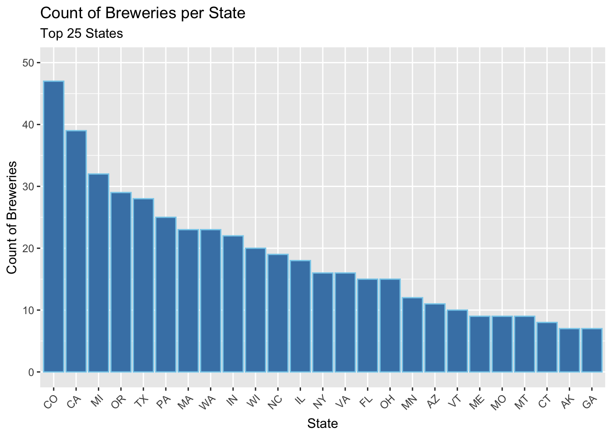
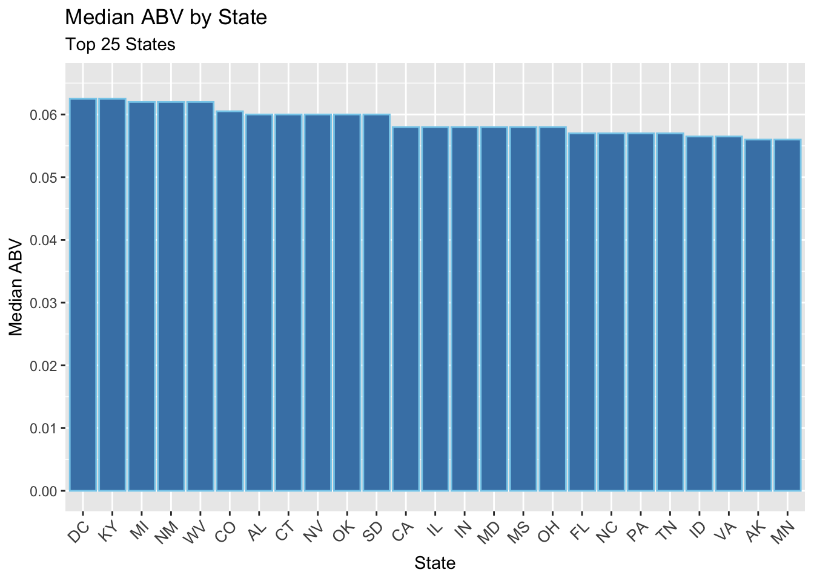
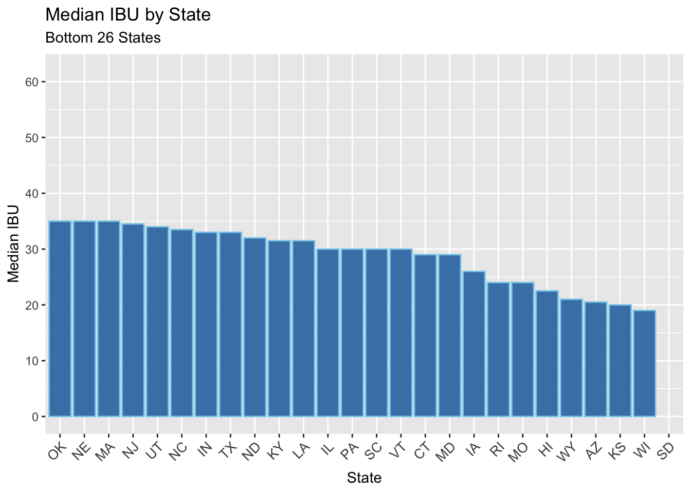
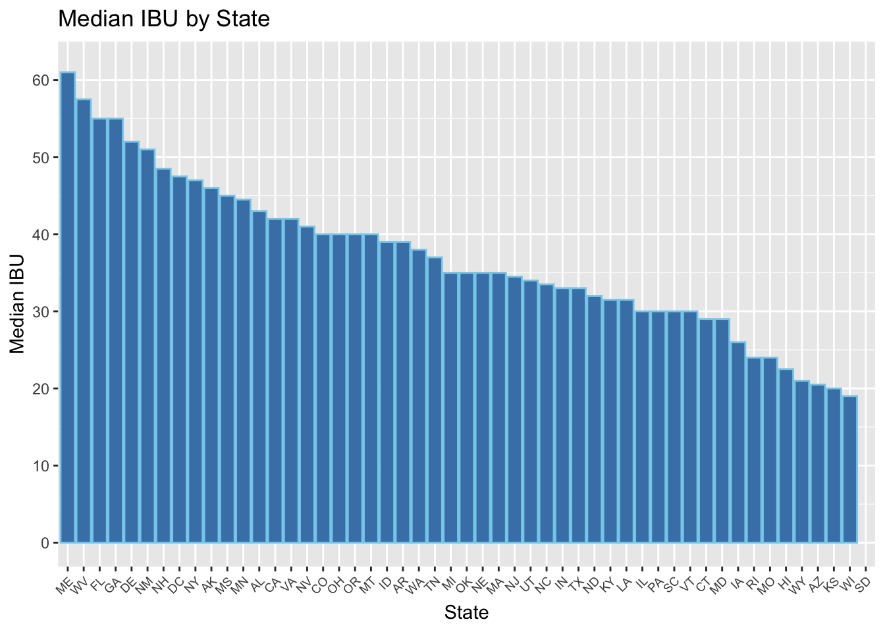
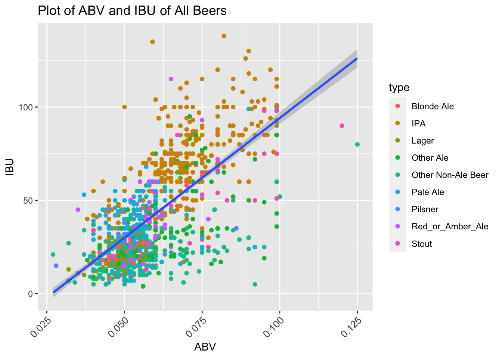

Case Study 1 DDS 6306
Cameron Stewart and Adam Alidra
3/5/2021
Introduction
Craft Beer and Brewery Report for CEO and CFO of Budweiser:
In this report, you will find our team’s analysis and response to the seven questions requested from Budweiser and our team’s additional insights based on the Beers and Breweries datasets. The initial investigation is a state level study of Brewery count, median ABV, and median IBU. Looking deeper at the key beer characteristics, our team examined the distribution of ABV, the relationship between ABV vs. IBU, and noted the maximum values for each. Utilizing the relationship between ABV and IBU, our team deployed machine learning techniques (KNN and Naive Bayes) to predict the beer style. The first model predicts IPA vs. Other Ales and the second model classifies each beer to a generalized list of beer styles. For each analysis, NAs will be addressed where applicable.
Load the required libraries, read in the data, and adjust variables to the correct type
library(naniar)
library(stringr)
library(class)
library(caret)## Loading required package: lattice## Loading required package: ggplot2library(e1071)
library(plyr)
library(dplyr)##
## Attaching package: 'dplyr'## The following objects are masked from 'package:plyr':
##
## arrange, count, desc, failwith, id, mutate, rename, summarise,
## summarize## The following objects are masked from 'package:stats':
##
## filter, lag## The following objects are masked from 'package:base':
##
## intersect, setdiff, setequal, unionlibrary(ggthemes)
library(tidyverse)## ── Attaching packages ─────────────────────────────────────── tidyverse 1.3.0 ──## ✓ tibble 3.0.4 ✓ purrr 0.3.4
## ✓ tidyr 1.1.2 ✓ forcats 0.5.0
## ✓ readr 1.4.0## ── Conflicts ────────────────────────────────────────── tidyverse_conflicts() ──
## x dplyr::arrange() masks plyr::arrange()
## x purrr::compact() masks plyr::compact()
## x dplyr::count() masks plyr::count()
## x dplyr::failwith() masks plyr::failwith()
## x dplyr::filter() masks stats::filter()
## x dplyr::id() masks plyr::id()
## x dplyr::lag() masks stats::lag()
## x purrr::lift() masks caret::lift()
## x dplyr::mutate() masks plyr::mutate()
## x dplyr::rename() masks plyr::rename()
## x dplyr::summarise() masks plyr::summarise()
## x dplyr::summarize() masks plyr::summarize()##Read in beers.csv and convert variables to the appropriate class. Also change the 'Name' column to be more specific due to conflict in the other dataset
# Beers.csv Variables:
#
# Name: Name of the beer.
#
# Beer_ID: Unique identifier of the beer.
#
# ABV: Alcohol by volume of the beer.
#
# IBU: International Bitterness Units of the beer.
#
# Brewery_ID: Brewery id associated with the beer.
#
# Style: Style of the beer.
#
# Ounces: Ounces of beer.
beers = read.csv('~/Documents/SMU_DS/Doing Data Science/DDS_Git/Doing-Data-Science/Unit 8 and 9 Case Study 1/Beers.csv',header = TRUE)
colnames(beers)[1]="Beer_Name"
beers$Beer_ID = as.factor(beers$Beer_ID)
beers$Brewery_id = as.factor(beers$Brewery_id)
beers$Style = as.factor(beers$Style)
str(beers)## 'data.frame': 2410 obs. of 7 variables:
## $ Beer_Name : chr "Pub Beer" "Devil's Cup" "Rise of the Phoenix" "Sinister" ...
## $ Beer_ID : Factor w/ 2410 levels "1","4","5","6",..: 1188 1988 1987 1986 1985 1984 1983 1982 1981 1860 ...
## $ ABV : num 0.05 0.066 0.071 0.09 0.075 0.077 0.045 0.065 0.055 0.086 ...
## $ IBU : int NA NA NA NA NA NA NA NA NA NA ...
## $ Brewery_id: Factor w/ 558 levels "1","2","3","4",..: 409 178 178 178 178 178 178 178 178 178 ...
## $ Style : Factor w/ 100 levels "","Abbey Single Ale",..: 19 18 16 12 16 80 18 22 18 12 ...
## $ Ounces : num 12 12 12 12 12 12 12 12 12 12 ...##Read in breweries.csv and convert variables to the appropriate class. Also change the 'Name' column to be more specific due to conflict with the other dataset
# Breweries.csv Variables:
#
# Brew_ID: Unique identifier of the brewery.
#
# Name: Name of the brewery.
#
# City: City where the brewery is located.
#
# State: U.S. State where the brewery is located.
breweries = read.csv('~/Documents/SMU_DS/Doing Data Science/DDS_Git/Doing-Data-Science/Unit 8 and 9 Case Study 1/Breweries.csv',header = TRUE)
colnames(breweries)[2] = "Brewery_Name"
breweries$Brew_ID = as.factor(breweries$Brew_ID)
breweries$City = as.factor(breweries$City)
breweries$State = as.factor(breweries$State)
str(breweries)## 'data.frame': 558 obs. of 4 variables:
## $ Brew_ID : Factor w/ 558 levels "1","2","3","4",..: 1 2 3 4 5 6 7 8 9 10 ...
## $ Brewery_Name: chr "NorthGate Brewing " "Against the Grain Brewery" "Jack's Abby Craft Lagers" "Mike Hess Brewing Company" ...
## $ City : Factor w/ 384 levels "Abingdon","Abita Springs",..: 228 200 122 299 300 62 91 48 152 136 ...
## $ State : Factor w/ 51 levels " AK"," AL"," AR",..: 24 18 20 5 5 41 6 23 23 23 ...Find the count of Breweries located in each state
#Create breweries_by_state to store summarized data of Count of Breweries by State
breweries_by_state = data.frame(breweries %>% group_by(State) %>% summarise(Count = n()) %>% arrange(desc(Count)))## `summarise()` ungrouping output (override with `.groups` argument)breweries_by_state## State Count
## 1 CO 47
## 2 CA 39
## 3 MI 32
## 4 OR 29
## 5 TX 28
## 6 PA 25
## 7 MA 23
## 8 WA 23
## 9 IN 22
## 10 WI 20
## 11 NC 19
## 12 IL 18
## 13 NY 16
## 14 VA 16
## 15 FL 15
## 16 OH 15
## 17 MN 12
## 18 AZ 11
## 19 VT 10
## 20 ME 9
## 21 MO 9
## 22 MT 9
## 23 CT 8
## 24 AK 7
## 25 GA 7
## 26 MD 7
## 27 OK 6
## 28 IA 5
## 29 ID 5
## 30 LA 5
## 31 NE 5
## 32 RI 5
## 33 HI 4
## 34 KY 4
## 35 NM 4
## 36 SC 4
## 37 UT 4
## 38 WY 4
## 39 AL 3
## 40 KS 3
## 41 NH 3
## 42 NJ 3
## 43 TN 3
## 44 AR 2
## 45 DE 2
## 46 MS 2
## 47 NV 2
## 48 DC 1
## 49 ND 1
## 50 SD 1
## 51 WV 1##Display Count of Breweries by State
#For readability displaying first 25 and last 26 on the same y-scale
head(breweries_by_state,25) %>% ggplot(aes(x=reorder(State,-Count),y=Count))+geom_bar(stat = 'identity',color='skyblue',fill='steelblue') + xlab("State") + ylab("Count of Breweries") + ggtitle("Count of Breweries per State","Top 25 States") + theme(axis.text.x=element_text(angle=45, hjust=1)) + scale_y_continuous(breaks = seq(0,50,10),limits = c(0,50))
tail(breweries_by_state,26) %>% ggplot(aes(x=reorder(State,-Count),y=Count))+geom_bar(stat = 'identity',color='skyblue',fill='steelblue') + xlab("State") + ylab("Count of Breweries") + ggtitle("Count of Breweries per State","Bottom 26 States") + theme(axis.text.x=element_text(angle=45, hjust=1)) + scale_y_continuous(breaks = seq(0,50,10),limits = c(0,50))
#Full 51 states in one plot with small text
head(breweries_by_state, 51) %>% ggplot(aes(x=reorder(State,-Count),y=Count))+geom_bar(stat = 'identity',color='skyblue',fill='steelblue') + xlab("State") + ylab("Count of Breweries") + ggtitle("Count of Breweries per State", "50 States and DC") + theme(axis.text.x=element_text(size= 7, angle=45, hjust=1))
558 Total Breweries listed in the Breweries data set. Top 25% of states contain over 60% of the Breweries. CO and CA have the most Breweries in total.
Merge the beer data with the breweries data. Printing the first 6 observations and the last 6 observations to check the merged file.
#Merge the two data sets into beers_merge on Brewery_id and Brew_ID
beers_merge=merge(beers,breweries,by.x = "Brewery_id", by.y = "Brew_ID")
str(beers_merge)## 'data.frame': 2410 obs. of 10 variables:
## $ Brewery_id : Factor w/ 558 levels "1","2","3","4",..: 1 1 1 1 1 1 10 100 101 101 ...
## $ Beer_Name : chr "Get Together" "Maggie's Leap" "Wall's End" "Pumpion" ...
## $ Beer_ID : Factor w/ 2410 levels "1","4","5","6",..: 2410 2409 2408 2407 2406 2405 2359 2161 2160 2078 ...
## $ ABV : num 0.045 0.049 0.048 0.06 0.06 0.056 0.052 0.089 0.09 0.07 ...
## $ IBU : int 50 26 19 38 25 47 NA 126 NA NA ...
## $ Style : Factor w/ 100 levels "","Abbey Single Ale",..: 16 77 48 83 22 57 18 12 66 22 ...
## $ Ounces : num 16 16 16 16 16 16 16 12 12 12 ...
## $ Brewery_Name: chr "NorthGate Brewing " "NorthGate Brewing " "NorthGate Brewing " "NorthGate Brewing " ...
## $ City : Factor w/ 384 levels "Abingdon","Abita Springs",..: 228 228 228 228 228 228 136 71 192 192 ...
## $ State : Factor w/ 51 levels " AK"," AL"," AR",..: 24 24 24 24 24 24 23 36 18 18 ...#Display first and last 6 values in merged data set
head(beers_merge,6)## Brewery_id Beer_Name Beer_ID ABV IBU
## 1 1 Get Together 2692 0.045 50
## 2 1 Maggie's Leap 2691 0.049 26
## 3 1 Wall's End 2690 0.048 19
## 4 1 Pumpion 2689 0.060 38
## 5 1 Stronghold 2688 0.060 25
## 6 1 Parapet ESB 2687 0.056 47
## Style Ounces Brewery_Name City
## 1 American IPA 16 NorthGate Brewing Minneapolis
## 2 Milk / Sweet Stout 16 NorthGate Brewing Minneapolis
## 3 English Brown Ale 16 NorthGate Brewing Minneapolis
## 4 Pumpkin Ale 16 NorthGate Brewing Minneapolis
## 5 American Porter 16 NorthGate Brewing Minneapolis
## 6 Extra Special / Strong Bitter (ESB) 16 NorthGate Brewing Minneapolis
## State
## 1 MN
## 2 MN
## 3 MN
## 4 MN
## 5 MN
## 6 MNtail(beers_merge,6)## Brewery_id Beer_Name Beer_ID ABV IBU
## 2405 98 Troegenator Doublebock 1510 0.082 25
## 2406 98 Perpetual IPA 1509 0.075 85
## 2407 99 Cortez Gold 2442 0.050 NA
## 2408 99 Mission IPA 2441 0.068 66
## 2409 99 El Conquistador Extra Pale Ale 1460 0.048 44
## 2410 99 Shipwrecked Double IPA 1459 0.092 75
## Style Ounces Brewery_Name City
## 2405 Doppelbock 16 Tröegs Brewing Company Hershey
## 2406 American IPA 12 Tröegs Brewing Company Hershey
## 2407 Belgian Pale Ale 32 Mission Brewery San Diego
## 2408 American IPA 32 Mission Brewery San Diego
## 2409 American Pale Ale (APA) 32 Mission Brewery San Diego
## 2410 American Double / Imperial IPA 32 Mission Brewery San Diego
## State
## 2405 PA
## 2406 PA
## 2407 CA
## 2408 CA
## 2409 CA
## 2410 CAAddress the NA values
#Summarize NA for each variable in all three data frames. Then visualize the merged dataframe NAs
miss_var_cumsum(beers)## # A tibble: 7 x 3
## variable n_miss n_miss_cumsum
## <chr> <int> <int>
## 1 Beer_Name 0 0
## 2 Beer_ID 0 0
## 3 ABV 62 62
## 4 IBU 1005 1067
## 5 Brewery_id 0 1067
## 6 Style 0 1067
## 7 Ounces 0 1067miss_var_cumsum(breweries)## # A tibble: 4 x 3
## variable n_miss n_miss_cumsum
## <chr> <int> <int>
## 1 Brew_ID 0 0
## 2 Brewery_Name 0 0
## 3 City 0 0
## 4 State 0 0miss_var_cumsum(beers_merge)## # A tibble: 10 x 3
## variable n_miss n_miss_cumsum
## <chr> <int> <int>
## 1 Brewery_id 0 0
## 2 Beer_Name 0 0
## 3 Beer_ID 0 0
## 4 ABV 62 62
## 5 IBU 1005 1067
## 6 Style 0 1067
## 7 Ounces 0 1067
## 8 Brewery_Name 0 1067
## 9 City 0 1067
## 10 State 0 1067gg_miss_var(beers_merge) + ggtitle("Missing Values per Variable in Merged Dataset") + theme(axis.text.x=element_text(size= 12))
sum(!complete.cases(beers_merge))## [1] 1005The breweries data frame has no NA values but the beers data frame has 1067 NA values. When the two tables are merged together, the 1067 NA values from the beers data frame are transferred to the beers_merge data frame. There are 1005 NA values in IBU and 62 NA values in ABV. There are 1005 rows with at least one NA. When we are analyzing a single column (e.g. ABV), we will use all non-NA values in that column. When we analyze multiple variables simultaneously (e.g. ABV and IBU), we will only use rows with no NAs in any of the variables of interest.
Compute the median ABV and IBU for each state. Plot a bar chart to compare
#Create summarized data in ABV_IBU_by_state frame with ABV and IBU medians by state
ABV_IBU_by_state = data.frame(beers_merge %>% group_by(State) %>% summarise(median_ABV = median(ABV,na.rm = TRUE), median_IBU = median(IBU,na.rm = TRUE)))## `summarise()` ungrouping output (override with `.groups` argument)##Plot Median ABV by State
#Re-order the factors for median_ABV so the bar chart can be plotted in descending order
ABV_IBU_by_state$State= fct_reorder(ABV_IBU_by_state$State, desc(ABV_IBU_by_state$median_ABV))
#Arrange the data frame where median_ABV is in descending order so that the data frame can be sliced
ABV_IBU_by_state = ABV_IBU_by_state %>% arrange(desc(median_ABV))
#For readability displaying first 25 and last 26 on the same y-scale
head(ABV_IBU_by_state,25) %>% ggplot(aes(x=State,y=median_ABV)) + geom_bar(stat = 'identity',color='skyblue',fill='steelblue') + xlab("State") + ylab("Median ABV") + ggtitle("Median ABV by State","Top 25 States") + theme(axis.text.x=element_text(size= 10, angle=45, hjust=1)) + scale_y_continuous(breaks = seq(0,0.07,0.01),limits = c(0,0.065))
tail(ABV_IBU_by_state,26) %>% ggplot(aes(x=State,y=median_ABV)) + geom_bar(stat = 'identity',color='skyblue',fill='steelblue') + xlab("State") + ylab("Median ABV") + ggtitle("Median ABV by State","Bottom 26 States") + theme(axis.text.x=element_text(size= 10, angle=45, hjust=1)) + scale_y_continuous(breaks = seq(0,0.06,0.01),limits = c(0,0.065))
#Plot all 51 states at once
ABV_IBU_by_state %>% ggplot(aes(x=State,y=median_ABV)) + geom_bar(stat = 'identity',color='skyblue',fill='steelblue') + xlab("State") + ylab("Median ABV") + ggtitle("Median ABV by State") + theme(axis.text.x=element_text(size= 7, angle=45, hjust=1)) + scale_y_continuous(breaks = seq(0,0.07,0.01),limits = c(0,0.065))
##Plot Median IBU by State
#Re-order the factors for median_ABV so the bar chart can be plotted in descending order
ABV_IBU_by_state$State= fct_reorder(ABV_IBU_by_state$State, desc(ABV_IBU_by_state$median_IBU))
#Arrange the data frame where median_ABV is in descending order so that the data frame can be sliced
ABV_IBU_by_state = ABV_IBU_by_state %>% arrange(desc(median_IBU))
#For readability displaying first 25 and last 26 on the same y-scale
head(ABV_IBU_by_state,25) %>% ggplot(aes(x=State,y=median_IBU)) + geom_bar(stat = 'identity',color='skyblue',fill='steelblue') + xlab("State") + ylab("Median IBU") + ggtitle("Median IBU by State","Top 25 States") + theme(axis.text.x=element_text(size= 10, angle=45, hjust=1)) + scale_y_continuous(breaks = seq(0,65,10),limits = c(0,62))
tail(ABV_IBU_by_state,26) %>% ggplot(aes(x=State,y=median_IBU)) + geom_bar(stat = 'identity',color='skyblue',fill='steelblue') + xlab("State") + ylab("Median IBU") + ggtitle("Median IBU by State","Bottom 26 States") + theme(axis.text.x=element_text(size= 10, angle=45, hjust=1)) + scale_y_continuous(breaks = seq(0,65,10),limits = c(0,62))## Warning: Removed 1 rows containing missing values (position_stack).
#Plot all 51 states at once
ABV_IBU_by_state %>% ggplot(aes(x=State,y=median_IBU)) + geom_bar(stat = 'identity',color='skyblue',fill='steelblue') + xlab("State") + ylab("Median IBU") + ggtitle("Median IBU by State") + theme(axis.text.x=element_text(size= 7, angle=45, hjust=1)) + scale_y_continuous(breaks = seq(0,65,10),limits = c(0,62))## Warning: Removed 1 rows containing missing values (position_stack).
When looking at Median ABV by State: DC and KY are tied for the highest ABV at 6.25%, UT has the lowest median ABV by a significant margin at 4.00%, and 84% of states have a median ABV between 5% - 6% (inclusive). (Note: Only removed values are rows with NA in ABV column)
When looking at Median IBU by State: ME has the highest median IBU, WI has the lowest median IBU, and SD has no IBU data in the provided data sets (shown without bar in chart). (Note: Only removed values are rows with NA in IBU column)
Find the state with the maximum alcoholic (ABV) beer and the most bitter (IBU) beer
#Max ABV beer
beers_merge[which(beers_merge$ABV==max(beers_merge$ABV,na.rm = TRUE)),]## Brewery_id Beer_Name Beer_ID
## 2048 52 Lee Hill Series Vol. 5 - Belgian Style Quadrupel Ale 2565
## ABV IBU Style Ounces Brewery_Name City State
## 2048 0.128 NA Quadrupel (Quad) 19.2 Upslope Brewing Company Boulder CO#Max IBU beer
beers_merge[which(beers_merge$IBU==max(beers_merge$IBU,na.rm = TRUE)),]## Brewery_id Beer_Name Beer_ID ABV IBU
## 1479 375 Bitter Bitch Imperial IPA 980 0.082 138
## Style Ounces Brewery_Name City
## 1479 American Double / Imperial IPA 12 Astoria Brewing Company Astoria
## State
## 1479 ORThe highest ABV beer is Lee Hill Series Vol. 5 - Belgian Style Quadrupel Ale. The highest IBU beer is Bitter Bitch Imperial IPA.
Analyze the summary statistics and distribution of the ABV variable.
#Show the summary of the ABV Variable
summary(beers_merge$ABV)## Min. 1st Qu. Median Mean 3rd Qu. Max. NA's
## 0.00100 0.05000 0.05600 0.05977 0.06700 0.12800 62#Display a box plot of ABV
beers_merge %>% ggplot() + geom_boxplot(aes(x=ABV,y="All Beers"), color='skyblue', fill='steelblue') + ggtitle("Distribution of ABV amongst all beers") + coord_flip() + theme(axis.text.x=element_text(size= 10, angle=45, hjust=1))## Warning: Removed 62 rows containing non-finite values (stat_boxplot).
The distribution of ABV is slightly right skewed which signifies higher dispersion in ABV in Q3 and Q4. Median ABV amongst all analyzed beers is 5.6%. There are significantly more outliers at the higher end of ABV than the lower end. There is a small subset of ABV outliers in top quartile hovering at or just below 10% ABV. (Note: Only removed values are rows with NA in ABV column)
Determine if there is an apparent relationship between the bitterness of the beer and its alcoholic content. Display a scatter plot.
#Plot scatter plot with linear trend line
beers_merge %>% ggplot(aes(x=ABV,y=IBU)) + geom_point() + geom_smooth(method = "lm") + ggtitle("Relation between ABV to IBU")+ theme(axis.text.x=element_text(size= 10, angle=45, hjust=1))## `geom_smooth()` using formula 'y ~ x'## Warning: Removed 1005 rows containing non-finite values (stat_smooth).## Warning: Removed 1005 rows containing missing values (geom_point).
#Display the linear model summary to evaluate the linear relationship
summary(lm(IBU~ABV,data = beers_merge))##
## Call:
## lm(formula = IBU ~ ABV, data = beers_merge)
##
## Residuals:
## Min 1Q Median 3Q Max
## -78.849 -11.977 -0.721 13.997 93.458
##
## Coefficients:
## Estimate Std. Error t value Pr(>|t|)
## (Intercept) -34.099 2.326 -14.66 <2e-16 ***
## ABV 1282.037 37.860 33.86 <2e-16 ***
## ---
## Signif. codes: 0 '***' 0.001 '**' 0.01 '*' 0.05 '.' 0.1 ' ' 1
##
## Residual standard error: 19.26 on 1403 degrees of freedom
## (1005 observations deleted due to missingness)
## Multiple R-squared: 0.4497, Adjusted R-squared: 0.4493
## F-statistic: 1147 on 1 and 1403 DF, p-value: < 2.2e-16There is strong evidence to suggest ABV and IBU have a linear relationship (p-value < 0.0001). As ABV increases (x-axis), the IBU value (y-axis) also tends to increase showing a moderate positive linear relationship (R = 0.67). 45% of the variability in IBU can be explained by ABV (R-sqared = 0.4497).
Compare and contrast the correlation between IBU and ABV between IPAs and other types of Ale beers using KNN classification
##Before KNN, we need to clear out NAs from ABV, IBU, and Style. After diving into Style, we found 3 blanks that were not listed as NA. Blank values are not a useful prediction category. We need to clean the data set to only display complete rows with no NAs or blanks in these columns.
#Convert all blanks in beers_merge to NA
beers_merge[beers_merge==""]=NA
#Check dim of beers_merge and check how many rows without NA's
dim(beers_merge)## [1] 2410 10sum(complete.cases(beers_merge))## [1] 1403#Remove incomplete cases
beers_merge_clean= na.omit(beers_merge)
#Reset row names after cleaning
row.names(beers_merge_clean) = 1:dim(beers_merge_clean)[1]
#Reset factor levels of Style (because NA/blanks were removed)
beers_merge_clean$Style=factor(beers_merge_clean$Style)
#Filter dataset into beers_merge_ale to include only Ales
beers_merge_ale= beers_merge_clean[grep(x= beers_merge_clean$Style, pattern = '(\\bIPA\\b|\\bAle\\b)', ignore.case= TRUE), ]
#Create IPA_or_Other_Ale column to distinguish between IPA and non-IPA beers and divide the data between IPA and non-IPA Ale
beers_merge_ale$IPA_or_Other_Ale= beers_merge_ale$Style
beers_merge_ale$IPA_or_Other_Ale= as.character(beers_merge_ale$IPA_or_Other_Ale)
beers_merge_ale$IPA_or_Other_Ale[grepl(x= beers_merge_ale$IPA_or_Other_Ale, pattern='(\\bIPA\\b)',ignore.case=TRUE)]= "IPA"
beers_merge_ale$IPA_or_Other_Ale[grep(x= beers_merge_ale$IPA_or_Other_Ale, pattern= '(\\bAle\\b)',ignore.case=TRUE)]="Other Ale"
beers_merge_ale$IPA_or_Other_Ale=factor(beers_merge_ale$IPA_or_Other_Ale)
#Standardize values of input variables and store as new columns (Z_ABV and Z_IBU)
beers_merge_ale$Z_ABV= scale(beers_merge_ale$ABV)
beers_merge_ale$Z_IBU= scale(beers_merge_ale$IBU)
#Use KNN internal cross validation (running multiple samples due to potential ties). Input columns are Z_ABV and Z_IBU. Output column is IPA_or_Other_Ale
train_cols= beers_merge_ale[,12:13]
outcome_data= beers_merge_ale[,11]
num_rand_samples= 15
max_k= 55
accuracy_matrix= matrix(nrow= num_rand_samples, ncol=max_k)
for(i in 1:num_rand_samples)
{
set.seed(i)
for(j in 1:max_k)
{
class_data= knn.cv(train_cols,cl = outcome_data, k=j)
CM= confusionMatrix(table(class_data,outcome_data))
accuracy_matrix[i,j]= CM$overall[1]
}
}
MeanAcc = colMeans(accuracy_matrix)
which(MeanAcc==max(MeanAcc))## [1] 23max(MeanAcc)## [1] 0.8685734plot(seq(1,max_k,1),MeanAcc, type = "l", main= "KNN Classification of Beer Type based on ABV & IBU", xlab= "k Value", ylab= "Mean Accuracy")
The KNN internal leave-one-out cross validation uses a standardized ABV and IBU to predict if the beer is an IPA or Other non-IPA Ale. All non-Ale beers were removed from the data leaving 944 beers. The KNN model was tested 15 times for every k from 1 to 55. k represents the number of closest points used to predict the category. The ideal k value for this model is 23. The mean accuracy of the model at k=23 is 86.86%. This means that 86.86% of the time the model correctly predicted the category of IPA or Other non-IPA Ale based on the ABV and IBU. This model is 1.49 times more accurate than classifying each of the Beers as the most popular value ‘Other Ale’ (58.4% of the values). (Note: Removed rows with NA or Blank values in ABV, IBU, or Style Variables)
Use Naive Bayes to classify common beer styles based on ABV and IBU
##Review count of beers by style to determine generalized categories to use (uncomment code below to see the list)
#data.frame(beers_merge_clean %>% group_by(Style) %>% summarise(Count = n(), ABV_median=median(ABV), IBU_median=median(IBU)) %>% arrange(desc(Count)))
#Create beers_merge_simplified_style for Naive Bayes analysis (copy of beers_merge_clean). Create new column called 'type' which will be used to store generalized beer categories
beers_merge_simplified_style = beers_merge_clean
beers_merge_simplified_style$type = beers_merge_simplified_style$Style
#Change type column to character vector and use grep() to use keywords to create generalized beer categories
beers_merge_simplified_style$type = as.character(beers_merge_simplified_style$type)
beers_merge_simplified_style$type[grepl(x = beers_merge_simplified_style$type,pattern = '(\\bIPA\\b)',ignore.case = TRUE)]="IPA "
f = data.frame(beers_merge_simplified_style) %>% group_by(type) %>% summarise(Count = n(), ABV_median=median(ABV), IBU_median=median(IBU)) %>% arrange(desc(Count))## `summarise()` ungrouping output (override with `.groups` argument)f## # A tibble: 86 x 4
## type Count ABV_median IBU_median
## <chr> <int> <dbl> <dbl>
## 1 "IPA " 392 0.068 70
## 2 "American Pale Ale (APA)" 153 0.055 44
## 3 "American Amber / Red Ale" 77 0.056 31
## 4 "American Blonde Ale" 61 0.05 20
## 5 "American Pale Wheat Ale" 61 0.048 20
## 6 "American Porter" 39 0.058 31
## 7 "American Brown Ale" 38 0.055 26
## 8 "Fruit / Vegetable Beer" 30 0.0505 15.5
## 9 "Hefeweizen" 27 0.051 15
## 10 "Kölsch" 27 0.049 22
## # … with 76 more rowssum(f$Count)## [1] 1403beers_merge_simplified_style$type[grepl(x = beers_merge_simplified_style$type,pattern = '(\\bLager\\b)',ignore.case = TRUE)]="Lager "
beers_merge_simplified_style$type[grep(x = beers_merge_simplified_style$type,pattern = '(\\bRed Ale\\b|\\bAmber Ale\\b)',ignore.case = TRUE)]="Red_or_Amber_Ale "
beers_merge_simplified_style$type[grep(x = beers_merge_simplified_style$type,pattern = '(\\bPale\\b)',ignore.case = TRUE)]="Pale Ale "
beers_merge_simplified_style$type[grep(x = beers_merge_simplified_style$type,pattern = '(\\bStout\\b)',ignore.case = TRUE)]="Stout "
beers_merge_simplified_style$type[grep(x = beers_merge_simplified_style$type,pattern = '(\\bPilsner\\b|\\bPilsener\\b)',ignore.case = TRUE)]="Pilsner "
beers_merge_simplified_style$type[grep(x = beers_merge_simplified_style$type,pattern = '(\\bBlonde\\b)',ignore.case = TRUE)]="Blonde Ale "
beers_merge_simplified_style$type[grep(x = beers_merge_simplified_style$type,pattern = '(\\bAle$)',ignore.case = TRUE)]="Other Ale "
beers_merge_simplified_style$type[grep(x = beers_merge_simplified_style$type,pattern = '(\\S)$',ignore.case = TRUE)]="Other Non-Ale Beer "
#Visualize scatter plot of type column by IBU and ABV (Use facet_wrap as well by type)
beers_merge_simplified_style %>% ggplot(aes(x=ABV,y=IBU)) + geom_point(aes(color=type)) + geom_smooth(method = "lm") + facet_wrap(~type) + ggtitle("Plot of ABV and IBU of All Beers") + theme(axis.text.x=element_text(size= 10, angle=45, hjust=1))## `geom_smooth()` using formula 'y ~ x'
beers_merge_simplified_style %>% ggplot(aes(x=ABV,y=IBU)) + geom_point(aes(color=type)) + geom_smooth(method = "lm") + ggtitle("Plot of ABV and IBU of All Beers") + theme(axis.text.x=element_text(size= 10, angle=45, hjust=1))## `geom_smooth()` using formula 'y ~ x'
## Use NB to determine probability of correct beer classification based on IBU and ABV values. Use a 70/30 split on training set vs test set. Re-run the model on 50 seeds to ensure accuracy.
beers_merge_simplified_style$type= factor(beers_merge_simplified_style$type)
iterations= 50
masterAcc=matrix(nrow= iterations)
masterSens=matrix(nrow=iterations)
masterSpec=matrix(nrow=iterations)
splitPerc= .7 #training/test split percentage
for(j in 1:iterations)
{
set.seed(j)
trainIndices= sample(1:dim(beers_merge_simplified_style)[1],round(splitPerc*dim(beers_merge_simplified_style)[1]))
train= beers_merge_simplified_style[trainIndices,]
test=beers_merge_simplified_style[-trainIndices,]
train_columns_split_model= train[,4:5]
test_columns= test[,4:5]
model= naiveBayes(train_columns_split_model, train$type)
CM= confusionMatrix(table(predict(model,test_columns), test$type))
masterAcc[j]=CM$overall[1]
masterSens[j]=CM$byClass[1]
masterSpec[j]=CM$byClass[2]
}
MeanAcc=colMeans(masterAcc)
MeanSens=colMeans(masterSens)
MeanSpec= colMeans(masterSpec)
MeanAcc## [1] 0.4499762MeanSens## [1] 0.6168876MeanSpec## [1] 0.8647353